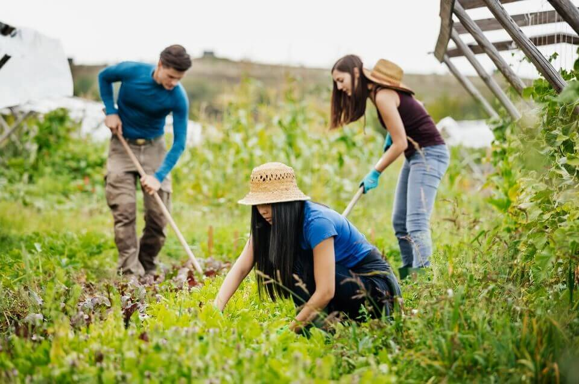
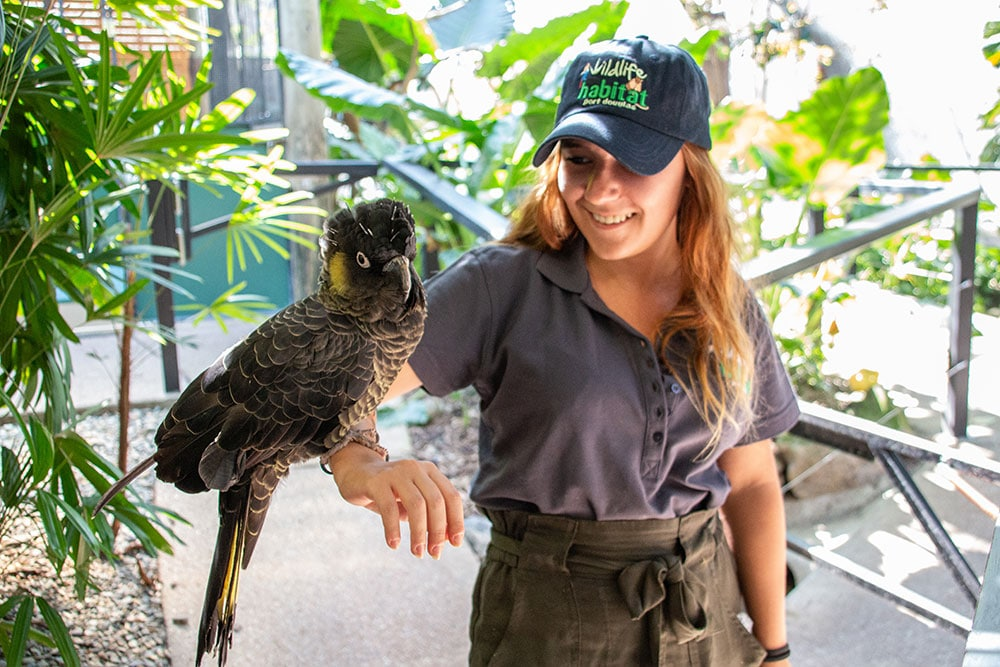

Abenteuer, Sonne, neue Freunde – Australien wartet!
Work and Travel
Beschreibung: Vorteile: Kosten: |
 |
|---|
Au-Pair
Beschreibung: Vorteile: |
|---|
Freiwilligenarbeit
Beschreibung: Beispiele: Vorteile: |
 |
|---|
und vieles mehr...